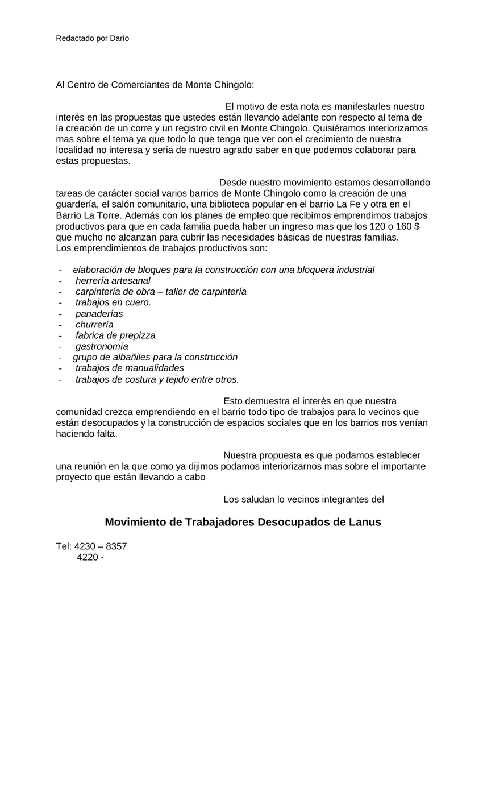

Primera hoja de al centro de comerciantes de Chingolo.doc. Clic en la imagen para abrir o descargar el archivo original.·23.0 KB·1 hoja

Redactado por Darío
Al Centro de Comerciantes de Monte Chingolo:
El motivo de esta nota es manifestarles nuestro interés en las propuestas que ustedes están llevando adelante con respecto al tema de la creación de un corre y un registro civil en Monte Chingolo. Quisiéramos interiorizarnos mas sobre el tema ya que todo lo que tenga que ver con el crecimiento de nuestra localidad no interesa y seria de nuestro agrado saber en que podemos colaborar para estas propuestas.
Desde nuestro movimiento estamos desarrollando
tareas de carácter social varios barrios de Monte Chingolo como la creación de una guardería, el salón comunitario, una biblioteca popular en el barrio La Fe y otra en el Barrio La Torre. Además con los planes de empleo que recibimos emprendimos trabajos productivos para que en cada familia pueda haber un ingreso mas que los 120 o 160 $ que mucho no alcanzan para cubrir las necesidades básicas de nuestras familias.
Los emprendimientos de trabajos productivos son:
elaboración de bloques para la construcción con una bloquera industrial
herrería artesanal
carpintería de obra – taller de carpintería
trabajos en cuero.
panaderías
churrería
fabrica de prepizza
gastronomía
grupo de albañiles para la construcción
trabajos de manualidades
trabajos de costura y tejido entre otros.
Esto demuestra el interés en que nuestra
comunidad crezca emprendiendo en el barrio todo tipo de trabajos para lo vecinos que están desocupados y la construcción de espacios sociales que en los barrios nos venían haciendo falta.
Nuestra propuesta es que podamos establecer
una reunión en la que como ya dijimos podamos interiorizarnos mas sobre el importante proyecto que están llevando a cabo
Los saludan lo vecinos integrantes del
Movimiento de Trabajadores Desocupados de Lanus
Tel: 4230 – 8357
4220 -
Transcripción del documento original al centro de comerciantes de Chingolo.doc. Se conserva la ortografía del original.